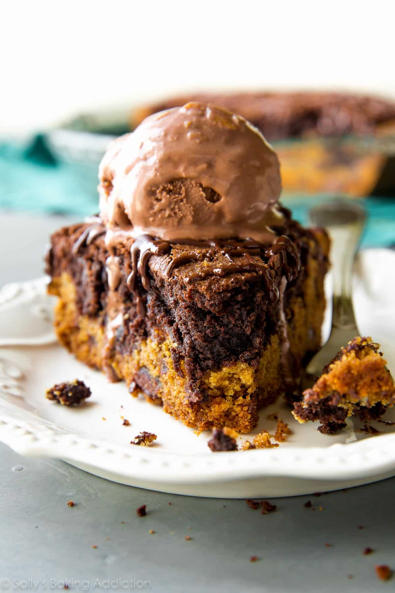
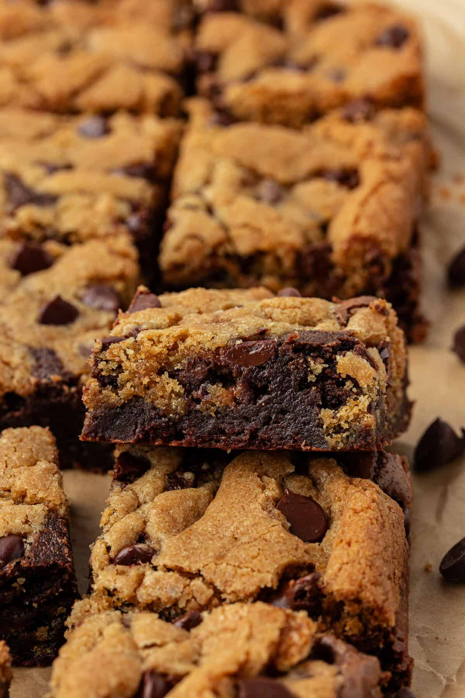

Brookie Pie

Description
A brookie pie is a wonderful combination of cookies and brownies. You can layer it and combine it however you like.
Brownie on top, cookie underneath or Cookie on top and brownie underneath or (my personal favorite) cookie underneath with patches of
cookies in it or it could be the other way around: 
Ingredients
Cookie Layer
- 2 cups (250g) all-purpose flour(spooned & leveled)
- 2 teaspoons cornstarch
- 1 teaspoon baking soda
- 1/2 teaspoon salt
- 3/4 cup (12 Tbsp; 170g) unsalted butter, softened to room temperature
- 3/4 cup (150g) packed light brown sugar
- 1/4 cup (50g) granulated sugar
- 1 large egg, at room temperature
- 2 teaspoons pure vanilla extract
- 1 and 1/4 cups (225g) semi-sweet chocolate chips
Brownie Layer
- 1/2 cup (8 Tbsp; 113g) unsalted butter
- 8 ounces (228g) coarsely chopped quality semi-sweet chocolate
- 3/4 cup (150g) granulated sugar
- 1/4 cup (50g) packed light brown sugar
- 3 large eggs, at room temperature
- 1 teaspoon pure vanilla extract
- 1/2 cup + 2 Tablespoons (78g) all-purpose flour (spooned & leveled)
- 2 Tablespoons (10g) unsweetened cocoa powder
- 1/4 teaspoon salt
Steps
- Preheat oven to 350°F (177°C). Grease a deep-dish 9-inch pie pan or use nonstick cooking spray. Set aside.
- Make the cookie layer: whisk the flour, cornstarch, baking soda, and salt together until combined. Set aside. In a large
bowl using a handheld or stand mixer fitted with a paddle attachment, beat the butter for 2 minutes on high speed until
completely smooth and creamy. Add the brown sugar and granulated sugar, then beat on medium high speed until fluffy and
light in color. Beat in the egg and vanilla on high speed. Scrape down the sides and bottom of the bowl as needed. On
low speed, slowly mix the dry ingredients into the wet ingredients until combined then beat in the chocolate chips. The
cookie dough will be thick. Press evenly into the prepared pie pan.
- Make the brownie layer: Melt the butter and chopped chocolate together in a heat-proof bowl in the microwave for 1 and
1/2 minutes. Remove and stir until all the chocolate is melted. Reheat for 20 more seconds if needed. Allow to cool for
5 minutes before adding the eggs (don't want them to scramble!). Whisk in both sugars, the eggs, and vanilla extract.
Then whisk in the flour, cocoa powder, and salt. Spread over the cookie layer.
- Bake the pie for 45-60 minutes or until a toothpick inserted into the center comes out mostly clean with a few moist
(not wet!) brownie crumbs. This could take a little longer than an hour. All ovens are different, but begin checking at
45 minutes. Loosely tent the top of the pie with aluminum foil if the edges are browning too quickly.
- Allow to cool completely in the pan set on a wire rack. Or allow to only cool for 30 minutes and serve warm with ice
cream. Leftovers keep well covered at room temperature for 5 days.
Homepage